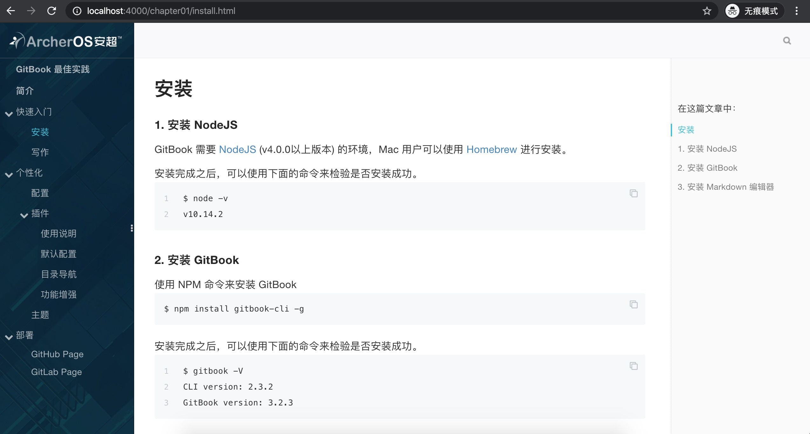
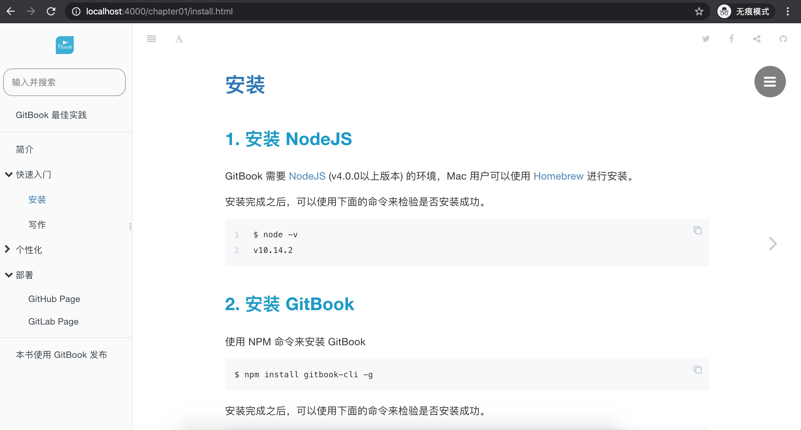

主题
GitBook 有很多主题插件，用户可以通过在 NPM 上搜索 gitbook-theme 来查找主题插件。
1. theme-archeros
插件地址：https://www.npmjs.com/package/gitbook-plugin-theme-archeros
GitHub地址：找不到了，但是这个主题很漂亮
{
"plugins": [
"theme-archeros"
],
"pluginsConfig": {
"theme-archeros":{
"search-placeholder":"请输入搜索关键字",
"logo":"./assets/logo.png",
"favicon": "./assets/favicon.ico",
"copyright": "",
"modify_label": "时间：",
"modify_format": "YYYY-MM-DD HH:mm:ss"
}
}
}
效果

2. theme-chaos
插件地址：https://www.npmjs.com/package/gitbook-plugin-theme-chaos
GitHub地址：https://gitee.com/Renovamen/gitbook-plugin-theme-chaos
{
"plugins": [
"theme-chaos"
]
}
效果
